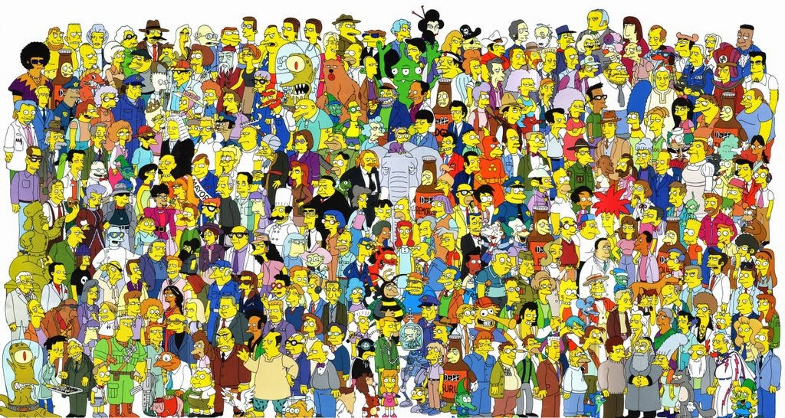
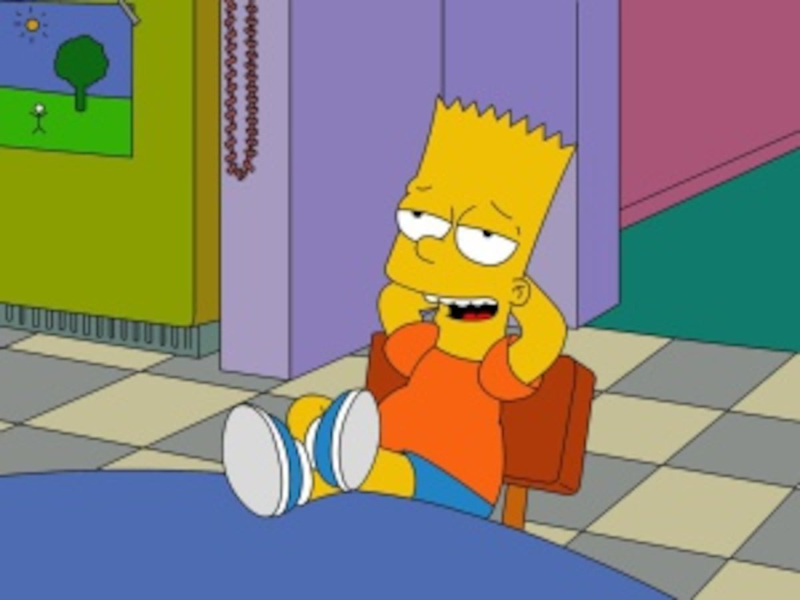
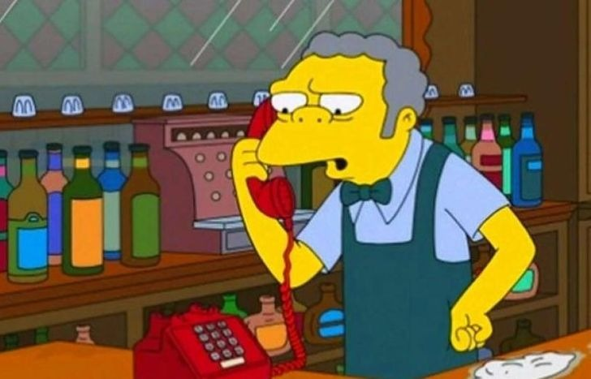
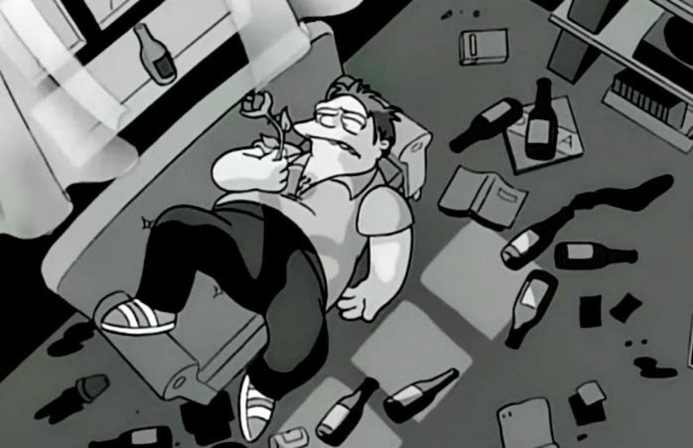
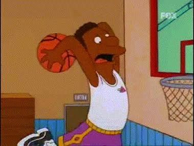
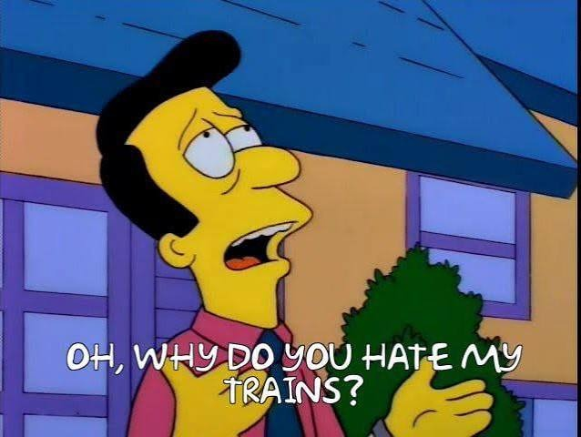
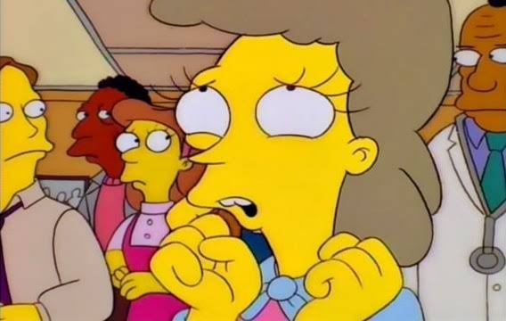
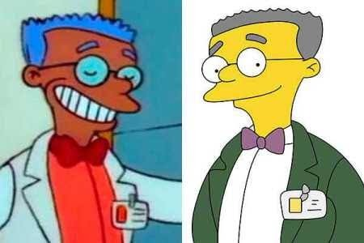
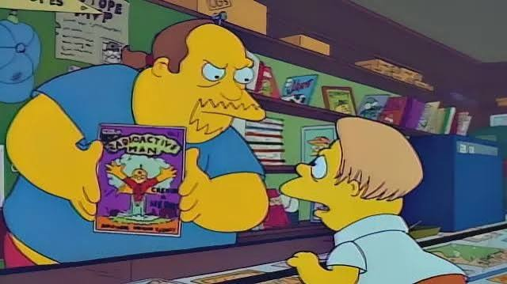
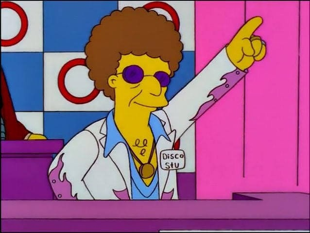

Personajes de Springfield
Donde nada puede malir sal — Conocé a todos los habitantes de la ciudad.

Springfield está habitada por una gran variedad de personajes, cada uno con su propia personalidad, historia y características que los hacen únicos. Desde la familia Simpson hasta los vecinos, amigos, compañeros de trabajo y habitantes más particulares de la ciudad, todos forman parte del mundo que hace de Springfield un lugar tan único. A lo largo de la serie, estos personajes protagonizan situaciones divertidas, conflictos y momentos memorables que reflejan sus diferentes personalidades y pensamientos. En esta sección podrás conocer a algunos de los personajes más importantes y representativos de Springfield, descubriendo quiénes son y qué papel cumplen dentro de la ciudad.
Homero es el padre de la familia Simpson. Trabaja en la planta nuclear de Springfield y es conocido por su personalidad despreocupada, impulsiva y divertida.
Marge es la madre de la familia Simpson. Se caracteriza por ser responsable, cariñosa y por intentar mantener unida a su familia frente a las diferentes situaciones que viven.

Bart es el hijo mayor de Homer y Marge. Es un niño travieso, rebelde y muy aficionado a hacer bromas, especialmente en la escuela y junto a sus amigos.
Lisa es la hija del medio de la familia. Es inteligente, estudiosa y apasionada por la música, además de tener una gran preocupación por diferentes problemas sociales y ambientales.
Maggie es la hija menor de la familia Simpson. Aunque todavía es un bebé, suele protagonizar situaciones que demuestran su personalidad y capacidad para sorprender a los demás.

Moe es el dueño y cantinero del bar que lleva su nombre. Tiene un carácter bastante malhumorado, aunque en varias ocasiones demuestra que se preocupa por sus amigos.

Barney es uno de los clientes más habituales del bar. Es conocido por su particular sentido del humor y por pasar gran parte de su tiempo junto a Moe y sus amigos.
Lenny es uno de los amigos de Homer y un cliente frecuente del bar. Trabaja en la planta nuclear de Springfield y suele compartir muchas aventuras junto a Carl y sus amigos.

Carl es compañero de trabajo y uno de los mejores amigos de Homer. Al igual que Lenny, suele reunirse con sus amigos en el Bar de Moe y participar en diferentes situaciones de Springfield.
Krusty es uno de los personajes más famosos de la televisión de Springfield. Es el presentador de un popular programa infantil y una de las figuras más reconocidas de la ciudad.
Kent Brockman es uno de los principales periodistas de Springfield. Es conocido por presentar las noticias y cubrir diferentes acontecimientos de la ciudad.

El Reverendo Alegia es el pastor de la iglesia de Springfield. Suele aconsejar a los habitantes de la ciudad y participa frecuentemente en las actividades de la comunidad.

Helen Alegria es la esposa del Reverendo Alegria. Es una de las habitantes más involucradas en los acontecimientos de la comunidad y suele expresar sus opiniones sobre lo que ocurre en Springfield.
El Sr. Burns es el propietario de la planta nuclear de Springfield. Es conocido por su enorme riqueza, su personalidad avara y su particular relación con sus empleados.

Smithers es el asistente personal del Sr. Burns. Se encarga de numerosas tareas dentro de la planta nuclear y suele acompañar a Burns en sus diferentes proyectos.

Es el dueño de la tienda de historietas de Springfield. Se caracteriza por su gran conocimiento sobre cómics, videojuegos y cultura popular, además de su particular personalidad.

Disco Stu es uno de los personajes más excéntricos de Springfield. Está obsesionado con la música disco y suele vestir y comportarse siguiendo ese estilo.